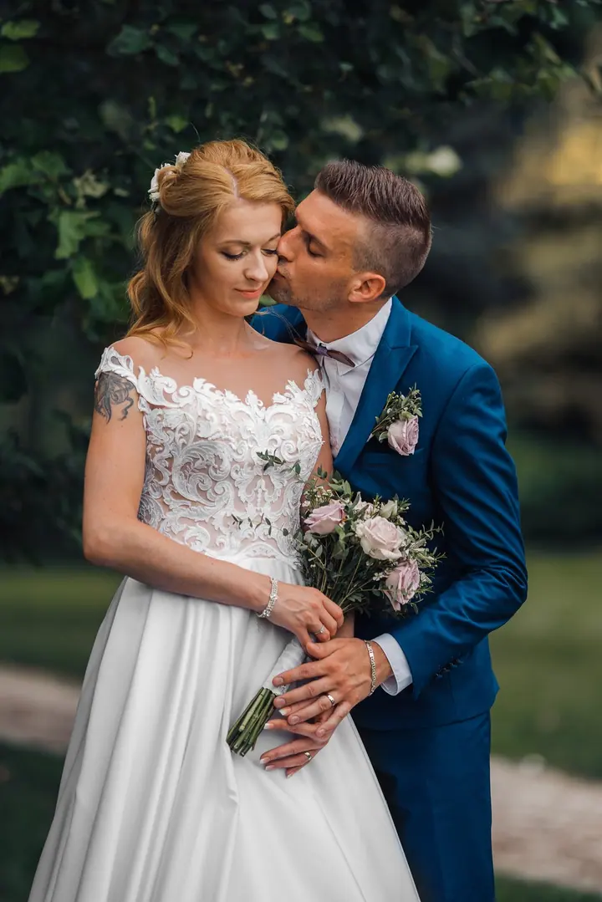
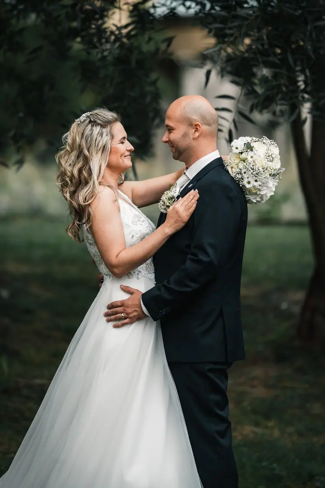

jedna
Svatební fotografie
Fotím jen obřad, den do novomanželského tance, nebo celý den od příprav po večerní zábavu. Jdu cestou přirozenosti a zachytím upřímná objetí, slzy dojetí i zábavu na parketu.

Svatební fotograf · sever Čech, Ústí nad Labem, celá Česká republika

Jmenuji se Ondra Budka a jsem svatební fotograf ze severu Čech. Zapomeňte na strnulé pózování, fotím přirozeně, abyste si svůj den hlavně užili. Na svatbě se snažím splynout s hosty jako kamarád s foťákem.
Více o mně
Co fotím
jedna
Fotím jen obřad, den do novomanželského tance, nebo celý den od příprav po večerní zábavu. Jdu cestou přirozenosti a zachytím upřímná objetí, slzy dojetí i zábavu na parketu.
dvě
Focení „nanečisto“, při kterém se lépe poznáme a vyzkoušíte si, jaké to je stát před objektivem. Odnesete si romantické párové fotky, třeba na svatební oznámení.
Fotokoutek vyfotsebudkou.cz s rekvizitami, digitálním výběrem pozadí a dotykovým monitorem. Hosté si tři hodiny tisknou fotky bez omezení a odnesou si okamžitou vzpomínku.
Svatební den uteče jako voda, vzpomínky zůstanou na celý život.

Za objektivem
Moje cesta k fotografii začala malým analogovým kompaktem, který mi rodiče dali k narozeninám. Narodil jsem se v Jilemnici, dětství jsem prožil v Ústí nad Labem a prázdniny u babičky v Desné. Tam jsem objevil kouzlo Krkonoš a s prvním fotoaparátem Panasonic Lumix FZ38 jsem se snažil zachytit krásu hor.
Pak přišla zrcadlovka Nikon D90 a krajinářská fotografie. Postupně mě ale víc a víc začali bavit lidé a portréty. Zlom přišel na konci roku 2017, kdy se mi narodila dcera. Investoval jsem do nového vybavení a Nikonu D810, začal fotografii brát jako své povolání a otevřel jsem si fotoateliér.
Dnes mám za sebou desítky nafocených svateb. Vím, jak den plyne, a nezaskočí mě ani změna počasí, ani časový skluz. Nehledám svatební klišé, zajímají mě autentické emoce, nečekané momenty a detaily, které dělají vaši svatbu jedinečnou.
Ondřej
Vyplníte formulář s datem a místem svatby. Do 24 hodin ověřím dostupnost a pošlu vám nabídku na míru.
Po odsouhlasení nabídky připravím rezervační smlouvu a zálohovou fakturu. Po podpisu a uhrazení zálohy je termín závazně váš.
Měsíc až dva před svatbou se potkáme osobně nebo online. Projdeme harmonogram, přání na skupinové fotky a místa pro vaše portréty.
Do 3 dnů od svatby vám pošlu první ochutnávku 10–15 fotek. Kompletní zakázku dostanete do 4–6 týdnů v soukromé online galerii.
Portfolio
Otázky
Doporučuji co nejdříve, ideálně 6–12 měsíců předem. Hlavně v sezóně od května do září se pátky a soboty plní nejrychleji.
Žádný strach, i v dešti vzniknou krásné fotky. Sleduji radar a harmonogram přizpůsobíme: portréty přesuneme pod střechu, použijeme průhledné deštníky, nebo je po dohodě nafotíme jindy.
Působím hlavně na severu Čech, ale rád dojedu kamkoliv po České republice. Cestovné do 50 km od mého bydliště je v ceně balíčku, dál účtuji drobný poplatek za kilometr.
Neupravené fotky ani RAW neposkytuji. Výběr, barevné tónování a práce se světlem jsou polovinou mého rukopisu, kvůli kterému si mě vybíráte.

Napište pár vět o tom, co si představujete. · +420 724 620 692